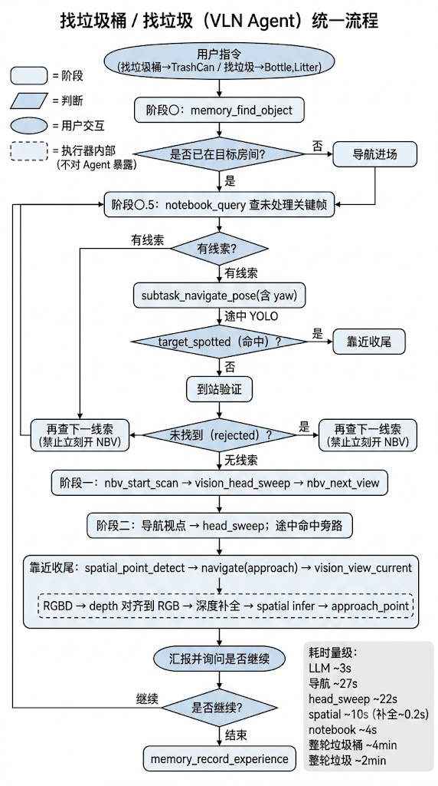
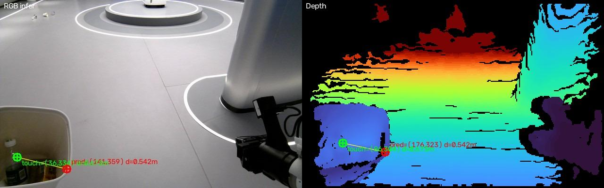
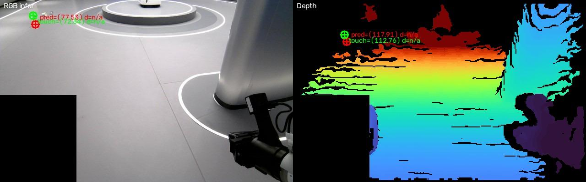
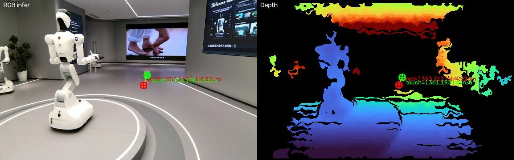
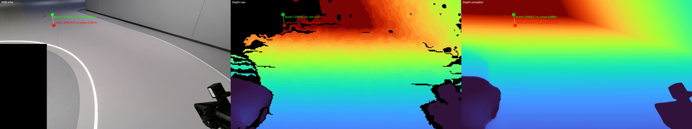

成熟能力，封装为工具
- 定位、建图与路径规划
- 给定目标点后的运动控制
- 局部避障与到达判断
面向开放室内环境的任务级导航大脑：理解意图，拆分 point / object goal，组合记忆、视觉、探索与真机控制工具，并在每次真实反馈后重新决策。
导航解决“如何到达”，Agent 负责理解“要做什么、先做什么，以及失败后怎么办”。
把“把全屋垃圾收起来”转化为可执行目标，而不是要求用户给出坐标。
短期保存当前目标与最近观察，长期保存物体 Pose、探索区域和处理状态。
地图检索未命中时，结合视觉推理与覆盖状态选择下一处搜索区域。
工具失败后保留原因，调整接近点、观察位姿或搜索策略再执行。
同一组工具可组合出新的任务流程，减少为语义异常逐项手写分支。
它不是单点能力演示，而是一条能够同时暴露感知、导航、操作、记忆和任务规划问题的完整链路。
优先查空间记忆，未命中则探索；检测确认目标。
检索 · 检测 · 探索生成可达接近点，导航到位后调用抓取能力。
接近点 · 导航 · 操作结合房间覆盖状态搜索，避免回到已完成区域。
视觉 · 覆盖记忆检测小目标，结合深度获得三维位置并执行拾取。
YOLO-World · Depth过滤手持桶区域，避免把桶内垃圾识别成新目标。
Mask · 手持物体滤除检查未处理目标和探索覆盖，完成后把桶放回。
状态检查 · 终止判断高层只处理任务状态和工具选择；底层导航、感知与操作保持模块化、可观测和可验证。
Agent 能完成编排与重规划，但系统上限最终由可调用工具的可靠性决定。
不追求所有问题都交给大模型，而是根据频率、稳定性和空间精度选择合适工具。
语义库用于给出可靠先验；检索未命中时，Agent 进入相关房间并调用视觉或 NBV 主动观察，避免把“未知”误判成“不存在”。
Map 保存环境真值，working buffer 保存当前会话，长期经验按需召回；关键帧作为视觉记忆独立索引，不让原始观察淹没上下文。
Target-driven Semantic NBV 在房间级体素地图中选择下一观察位姿；RGB-D、位姿与局部建图留在服务侧，不把大块传感数据塞进 LLM。

思考、工具调用、真实下发子任务与观察结果按步保存，评测与故障定位使用同一条证据链。
在 NavArena 真仿真中，从语义地图自动生产题目；到达和物体指向分别判定，两轴同时通过才计任务成功。
房间和物体均明确，检查基础 grounding、同名物体跨房消歧与到达能力。
由自然语言表达意图，结合规则和完整执行轨迹进行判定。
覆盖隐含需求、组合条件与更强歧义，保留人工 review 记录。
当前仓库包含 30 条基准用例、16 条自动生成用例与 12 条 Open-Hard 用例；页面只陈述数据与判分设计，不以未发布跑分代替结果。
每类异常都对应可执行守卫、明确结果码和可回放证据，而不是一句“重试”。




completed / timeout / stuck / depth_blocked / rejected / skipped
工作覆盖 Agent 策略、工具协议、记忆与主动感知、真机执行和评测数据闭环。
离线分析日志、视频和工具轨迹，自动聚类失败原因，生成回归测试与数据处理脚本，并把典型失败沉淀为 hard cases。所有代码修改和真机部署仍经过人工审核。